Im Menüpunkt
1 WinLine PPS
1 Produktion
1 Arbeitsschritt stornieren
können bereits endgemeldete Arbeitsschritte wieder storniert werden. Somit können Endmeldungen bzw. Teilendmeldungen von Arbeitsschritten rückgängig gemacht werden (d.h. das Stornieren von gebuchten IST-Zeiten und Lagerbuchungen und die Wiederherstellung von offenen Restmengen).
Das Stornieren kann auf zwei verschiedene Weisen durchgeführt werden, abhängig von der WinLine-Version, womit die Endmeldung ursprünglich durchgeführt wurde.
ü Arbeitsschritt Storno von Endmeldungen, die in Versionen vor WinLine 9.1 9100 durchgeführt wurden
Es können nur alle (teil)endgemeldete Arbeitsschritte von einem Produktionsauftrag storniert werden.
Beispiel
Ein Produktionsauftrag für 3 Stück vom Fahrrad "10007" im Demomandant wurde angelegt. Zwei Teilendmeldungen für jeweils ein Stück vom Fahrrad wurden durchgeführt. Im Fenster "Arbeitsschritt stornieren" können nur alle Arbeitsschritte, d.h. beide Teilendmeldungen, storniert und damit rückgängig gemacht werden.
ü Arbeitsschritt Storno von Endmeldungen, die in Versionen ab WinLine 9.1 9100 durchgeführt wurden
Es kann jeder (teil)endgemeldete Arbeitsschritt in einem Produktionsauftrag storniert werden.
Beispiel:
Ein Produktionsauftrag für 3 Stück vom Fahrrad "10007" wurde im Demomandanten angelegt. Zwei Teilendmeldungen für jeweils ein Stück vom Fahrrad wurden durchgeführt. Im Fenster "Arbeitsschritt stornieren" kann man nun jeden einzelnen Arbeitsschritt in jeder der beiden Teilendmeldungen stornieren.
Es kann jeder einzelne Arbeitsschritt für den Storno in der Tabelle ausgewählt werden. Die Ebenenposition vom ausgewählten Arbeitsschritt bzw. die getroffenen Einstellungen im Fenster können dabei zu unterschiedlichen Auswirkungen durch das Stornieren führen (wie weiter unten beschrieben).
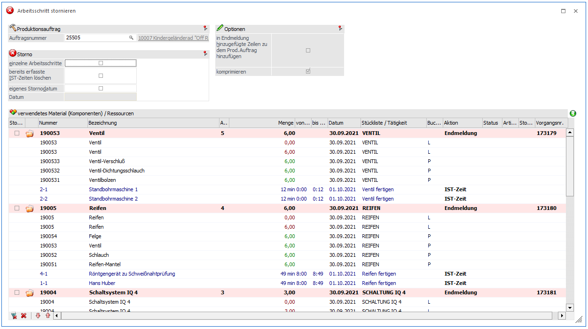
Produktionsauftrag
Ø Produktionsauftrag
Hier muss zunächst das Projekt/der Produktionsauftrag, für das die Arbeitsschritte storniert werden sollen, eingegeben werden.
In der Tabelle werden alle Arbeitsschritte, die von dem angegebenen Projekt bereits endgemeldet wurden, angezeigt.
Ø bereits erfasste Ist-Zeiten löschen
Ist diese Checkbox aktiv, so werden alle bereits erfassten Ist-Zeiten (d.h. Zeiten aus dem Fenster "IST-Zeitenerfassung" ) mit dem jeweiligen Arbeitsschritt gelöscht. Ist diese Checkbox nicht aktiv und wurden Ist-Zeiten zu einem Arbeitsschritt, der hier storniert werden soll, erfasst, dann stehen diese bei einer weiteren Bearbeitung (bei der Endmeldung bzw. bei der Ist-Zeitenerfassung) wieder zur Verfügung.
Ø eigenes Stornodat.
Wird diese Checkbox aktiviert, dann kann im Feld
Ø Datum
das Datum eingegeben werden, mit den die Stornobuchungen durchgeführt werden sollen. Wird die Checkbox aktiviert und kein Datum eingegeben, dann wird das Produktionsenddatum als Stornodatum verwendet. Bleibt die Checkbox inaktiv, dann erfolgen die Buchungen zu dem Datum, mit dem sie ursprünglich erzeugt wurden.
Hinweis
Ist Checkbox "eigenes Stornodatum" aktiviert, können Endmeldungen aus vorigen Wirtschaftsjahren im aktuellen Wirtschaftsjahr ausgeführt werden. Es muss auch ein Datum aus dem aktuellen Wirtschaftsjahr im nächsten Datumsfeld eingetragen werden. Wenn ein Stücklistenteil nicht mehr im aktuellen Wirtschaftsjahr vorhanden ist (Artikel wurde gelöscht bzw. nicht aus dem vorigen Jahr übernommen), erscheint ein Warnsymbol in der Tabelle beim Artikel. Das Arbeitsschrittstorno kann trotzdem ausgeführt werden, aber der nicht mehr vorhandene Artikel wird beim Storno im Bezug auf Lagerbuchungen bzw. die Stückliste berücksichtigt.
Storno
Ø Einzelne Arbeitsschritte
Bei Aktivierung von dieser Checkbox kann jeder (teil)endgemeldete Arbeitsschritt in einem Produktionsauftrag storniert werden. Dies ist nur möglich für Endmeldungen die in der WinLine ab Version 9.1 9100 durchgeführt wurden. Die Einstellung der Checkbox ist benutzerspezifisch gespeichert.
Hinweis
Falls die Endmeldung in einer früheren WinLine-Version stattfand, wird diese Checkbox nach der Selektion von der Checkbox "Stornieren" bei einem Arbeitsschritt in der Tabelle automatisch deaktiviert. Die Checkbox ist auch automatisch deaktiviert, wenn Materialentnahmen bzw. Teilentnahmen vor der Endmeldung vorgenommen wurden.
Ø In Endmeldung hinzugefügte Zeilen zum Produktionsauftrag hinzufügen
Während der Endmeldung können Artikel in der Stückliste erfasst werden. Wenn diese Checkboxoption aktiviert ist, werden diese während der Endmeldung manuell erfassten Zeilen genau wie die anderen Artikelzeilen in der Stückliste behandelt. D.h. diese Artikel werden auch wieder zum Produktionsauftrag hinzufügt.
Wenn die Option nicht aktiviert ist, werden zwar die Lagerbuchungen für diesen Artikel rückgängig gemacht, aber die Artikel selbst werden nicht in die Stückliste des Produktionsauftrages hinzufügt.
Ø Komprimieren
Diese Checkbox ist standardmäßig aktiviert und inaktiv (grau). Beim Stornieren der Arbeitsschritten mit Komprimieren werden die zu stornierenden Arbeitsschritte im Produktionsauftrag in den Zustand vor der jeweilige (Teil)Endmeldung zurückgesetzt. Die für die Produktion verwendete Menge wird wieder reduziert bzw. somit die Restmenge wieder erhöht.
Beispiel
Ein Produktionsauftrag für 3 Stück vom Fahrrad "10007" im Demomandant wurde angelegt. Eine Teilendmeldungen für 2 Stück vom Arbeitsschritt "Ventil" wurde durchgeführt. In der Auswertung "Produktionsinformation" sind fürs Ventil die folgenden Mengen ersichtlich:
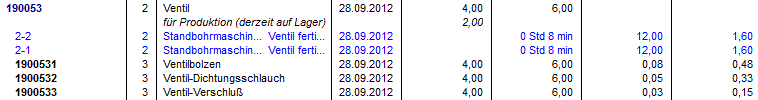
D.h. eine Auftragsmenge von 6, eine Restmenge von 4 und eine schon produzierte Menge ("für Produktion - derzeit auf Lager") von 2 Stück werden ausgegeben. Wenn diese Checkbox beim Storno aktiviert ist, wird die schon produzierte Menge des Ventils einfach storniert und die Restmenge wieder bei den bestehenden Zeilen der Stückliste auf 6 zurückgesetzt. Im folgenden Schirm ist das Ergebnis des Stornos nachher im Fenster "Stücklisten bearbeiten" für den Arbeitsschritt "Ventil" ersichtlich:
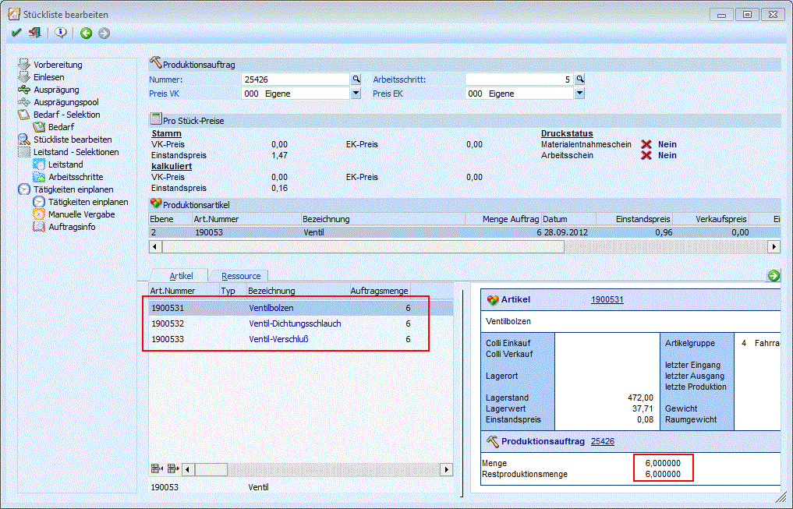
Die bestehenden Zeilen für die Stücklistenteile wurden dabei wieder auf Auftragsmenge = 6 und Restmenge = 6 zurückgesetzt. Die Zeilen können beim Storno auf diese Weise nur wiederhergestellt werden (d.h. "komprimiert"), solange der Arbeitsschritt nicht aus dem Produktionsauftrag in der Produktionskorrektur entfernt wurde.
Artikel
In der Tabelle in diesem Bereich können die einzelnen Arbeitsschritte zum Stornieren selektiert werden. Die Arbeitsschritte sind mit dem "Verzeichnis"-Symbol gekennzeichnet.
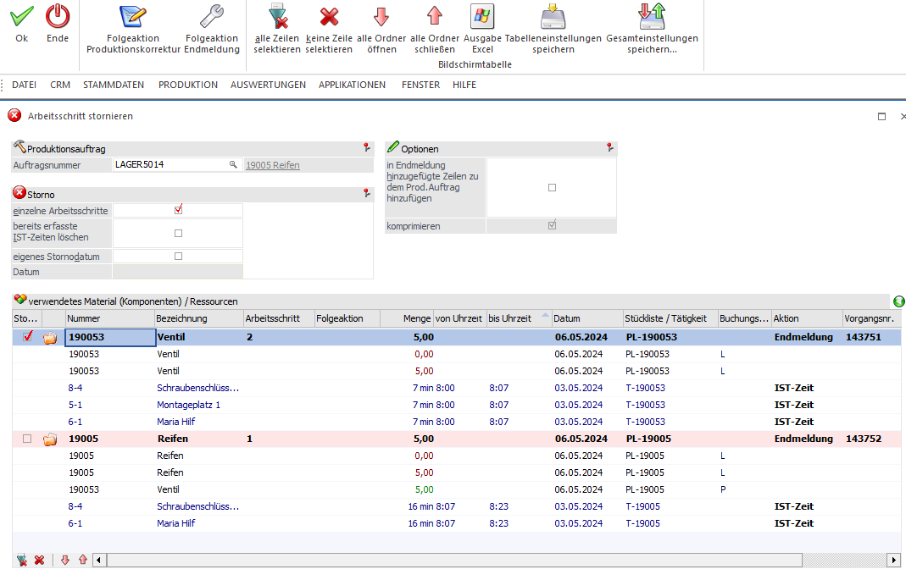
Unter dem jeweiligen Arbeitsschritt ist das verwendete Material (in Schwarz) und die Ressourcen (IST-Zeiten (in Blau) bei der Endmeldung aufgelistet. Zusätzlich sind Spalten für die Anzeige der Menge, die Von/Bis Zeit (bei Ressourcen), das Datum, die Stückliste bzw. Tätigkeit. und die Buchungsart in der Tabelle vorhanden.
Durch ein Doppelklick auf das Symbol kann der Inhalt des Arbeitsschritts in der Tabelle ein- bzw. ausgeblendet werden.
Ø Stornieren
Durch Aktivierung dieser Checkbox wird definiert, welcher Arbeitsschritt storniert werden soll. Jeder einzelne Arbeitsschritt kann storniert werden (für Endmeldungen in WinLine-Versionen ab Version 9.1 Build 9100), egal ob der Arbeitsschritt in der obersten Ebene liegt oder auch in der untersten. Es kann auch ein Arbeitsschritt storniert werden, der bereits in einem höherliegenden Arbeitsschritt verbaut worden ist.
Beispiel
Im obigen Bildschirm ist das Ventil schon in den nächst höhergelegenen Arbeitsschritt "Reifen" verbaut. Trotzdem ist es möglich das Ventil wieder zu stornieren. In diesem Fall erscheint die folgende Meldung wenn die Checkbox "Stornieren?" für das Ventil aktiviert wird:
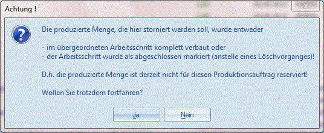
Wenn "Nein" bei der Meldung gewählt wird, bleibt die Checkbox deaktiviert.
Bei Bestätigung der Meldung mit Ja, wird ein Warnkennzeichen in der Spalte "Status" bei dem selektierten Arbeitsschritt angezeigt.
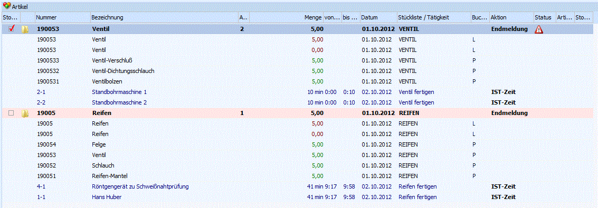
Ein erfolgter Storno des Ventils soll damit heißen, dass das Ventil de facto "vom Lager genommen" wurde, d.h. es wurde nicht produziert. Die Lagereingangsbuchungen für das Ventil werden storniert, die durch die Endmeldung entstanden sind. Die Lagerabgangsbuchung für das Ventil bleiben bestehen und werden nicht storniert. Der Arbeitsschritt selber, hier das Ventil, ist auf den Status "offen" zurückgesetzt, d.h. die Produktion ist noch nicht abgeschlossen. Das stornierte Material und Zeiten sind wieder zum Auftrag hinzufügt. Der stornierte Artikel kann damit erneut endgemeldet werden, z.B. mit anderen Mengen oder anderen Bestandteile. Bei einer nachfolgenden Endmeldung für den (eigentlich schon abgeschlossenen) Auftrag erscheint die folgende Meldung:
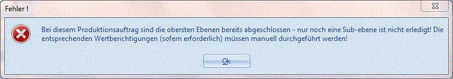
Wie in der Meldung angekündigt, kann der noch offene Arbeitsschritt für die Endmeldung wieder ausgewählt und endgemeldet werden, es müssen aber sowohl die Materialien als auch Zeiten manuell kontrolliert und gegebenenfalls berichtigt werden.
Hinweis
Die nochmalige Endmeldung der stornierten Unterebene bewirkt keinerlei Änderungen auf den bereits produzierten Artikel in den höherliegenden Ebenen. Beispielsweise bliebt die ursprüngliche Lagerabbuchung für das Ventil davon unberührt. Der obigen Warnmeldung entsprechend müssen evt. erforderliche Lagerwertberichtungen manuell durchgeführt werden.
INFO-Bereich
Ein Info-Panel kann mit dem Button im rechten oberen Teil der Tabelle eingeblendet werden. Es werden Informationen zu der aktuell selektierten Zeile in der Tabelle angezeigt. Die Auftragsmenge, Menge "noch nicht verbaut" und die aktuelle Restmenge ("zu stornieren") werden mitangezeigt. Die "aktuelle Restmenge" verdeutlicht wie sich das Stornieren von anderen Arbeitsschritten auf das Stornieren vom aktuellen Arbeitsschritt auswirken würde.
Beispiel:
Ein Produktionsauftrag für drei Stück vom Artikel "19005 Reifen" wurde angelegt (die Reifen enthalten die Unterebene "Ventil"). Nachher wurde eine Teilendmeldung für 1 Stück vom Reifen durchgeführt. Dann wird der Auftrag im Fenster "Arbeitsschritt stornieren" geöffnet.
Stücklistenebene "Reifen" ist nicht zum Stornieren aktiviert:
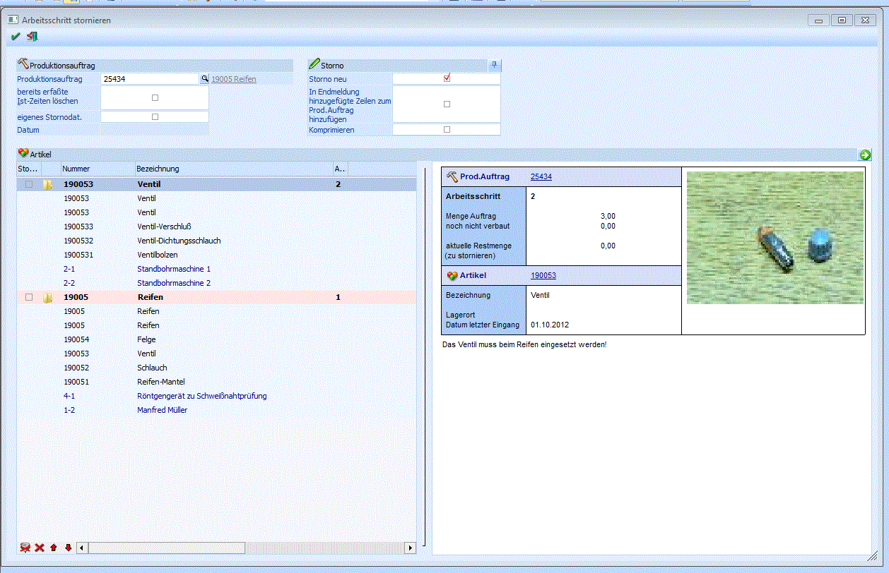
Die aktuelle Restmenge von 0 Stück wird im INFO-Panel für das Ventil angezeigt. D.h. es gibt keine Ventile, die noch nicht verbaut sind und die ohne Warnungen storniert werden können.
Stücklistenebene "Reifen" ist zum Stornieren aktiviert:
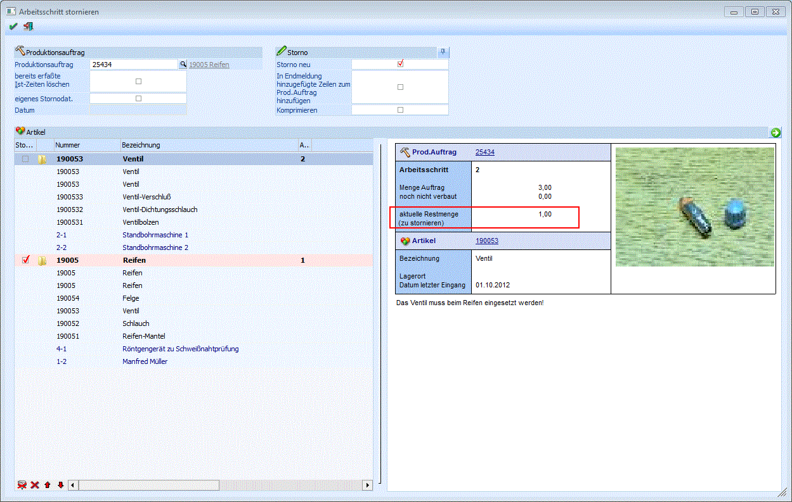
Da die Reifen zum Stornieren vorgemerkt sind, ist ein Ventil "noch nicht verbaut", d.h. die aktuelle Restmenge beträgt nun 1 Stück, das ohne weitere Warnungen storniert werden kann.
Hinweis
Im obigem Beispiel wenn man nun die Reifen wieder deaktiviert, wird ein Warnsymbol automatisch in der Spalte "Status" beim Arbeitsschritt "Ventil" eingeblendet:
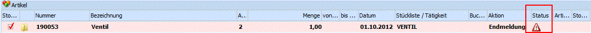
Hinweis
Beim Stornieren eines Arbeitsschritts können Ausprägungen, die bei der jeweiligen (Teil-)Endmeldung verwendet wurden, wiederhergestellt werden, und zwar abhängig von der Selektion bei Option "Ausprägungsfenster" in den PPS-Parameter/Produktionsauftragsanlage bzw. auch davon, ob die Ausprägungen vor der Endmeldung (z.B. in der Produktionskorrektur) oder erst während der Endmeldung gewählt wurden. Es gibt dabei die folgenden Variationen:
ü Variante A: Ausprägung
wird vor der Endmeldung gewählt (z.B. in der Korrektur)
Wenn der
PPS-Parameter auf "immer öffnen" eingestellt ist, dann wird versucht, die
Ausprägungen beim Arbeitsschritt stornieren wiederherzustellen. Wenn der
PPS-Parameter auf "nie öffnen" eingestellt ist, wird ebenfalls versucht,
die Ausprägungen beim Arbeitsschritt stornieren wiederherzustellen.
ü Variante B: Ausprägung
wird erst bei der Endmeldung gewählt
Wenn der PPS-Parameter auf "immer
öffnen" eingestellt ist, dann wird versucht, die Ausprägungen beim
Arbeitsschritt stornieren wiederherzustellen. Wenn der PPS-Parameter auf
"nie öffnen" eingestellt ist, dann wird NICHT versucht, die Ausprägungen beim
Arbeitsschritt stornieren wiederherzustellen, d.h. die Stücklistenteile sind
nach dem Arbeitsschritt Storno nicht ausgeprägt.
Buttons
Ø OK
Nach Bestätigung mit dem OK-Button werden alle selektierten Arbeitsschritte storniert.
Hinweis:
Wenn Warnsymbole in der Spalte "Status" angezeigt werden, wird die folgende Meldung nach einem Klick auf den OK-Button ausgegeben:
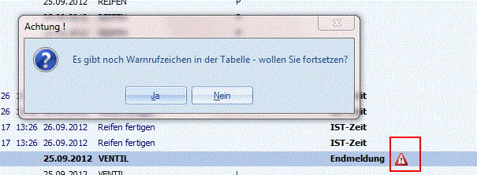
Wie in den vorigen Abschnitten beschrieben, können manuelle Berichtigungen evt. erfordlich sein, wenn das Stornieren mit Warnungen durchgeführt wird. Wählen Sie Ja, um den Storno trotzdem durchzuführen. Mit Auswahl von Nein, wird der Storno mit den akteullen Einstellungen nicht durchgeführt.
Ø Ende
Der Programmpunkt wird beendet und die Eingaben werden wieder verworfen.
Ø
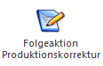
Folgeaktion ProduktionskorrekturErmöglicht im Anschluss an ein PPS-Storno gleich direkt in die Produktionskorrektur zu springen, um den eben stornierten Arbeitsschritt zu bearbeiten.
Ø
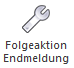
Folgeaktion EndmeldungErmöglicht im Anschluss an ein PPS-Storno gleich direkt in die Endmeldung zu springen, um den eben stornierten Arbeitsschritt erneut zu endmelden.
Ø Alle
Durch Anwählen dieses Buttons werden alle Arbeitsschritte in der Tabelle zum Storno markiert.
Ø Keiner
In der Spalte "Stornieren" werden alle Checkboxen deaktiviert.
Ø Alle Ordner schließen
Mit diesem Button kann der Inhalt für alle Arbeitsschritte in der Tabelle ausgeblendet werden.
Ø Alle Ordner öffnen
Mit diesem Button kann der Inhalt für alle Arbeitsschritte in der Tabelle eingeblendet werden.